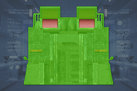
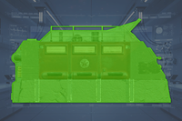
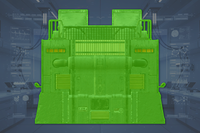
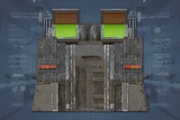

The 机器人制造厂, or 轻型 Fabricators in-game, is an 机器人 exclusive 建筑 found in 机器人 哨站. These fabricators will continuously deploy new Troopers and their 变体 until the 建筑 runs out of troopers or is destroyed.
结构解析
| 部件名称 |
生命值1 |
护甲值2 |
位置 |
耐久2 |
主血量占比3 |
溢出上限4 |
构造5 |
致命 |
爆炸抗性6 |
Demo
Force
|
| 主体 |
1,500 |
 Tank I Tank I |



|
100% |
- |
- |
无 |
是 |
0% |
40
|
| Vents |
- |
|
 |
N/A |
- |
- |
无 |
是 |
0% |
20 if 
|
Disclaimer: 每个带数量的高亮部位 a 数量有各自的 生命值. 未标注数量的部位共享 生命值 pools.
1) 生命值标注为"主体"的部位没有各自的独立生命值。对这些部位造成的所有伤害都会转移到敌人的主生命值池。
2) 护甲值与敌人耐久度请参阅
伤害 以获取更多信息。
3) 对部位造成的伤害也会部分或全部转移到主生命值。若设置为 0%，则不会转移任何伤害。
4) 若设置为"是"，转移到主生命值的伤害将以部位的生命值与构造之和为上限。
5) 构造充当次级生命池，一旦主体或肢体的生命值耗尽，可能会开始衰减。第一个数字是构造总量，第二个是衰减速率。若设置为 0/秒，则不会衰减，构造将作为额外生命值。
6) 爆炸抗性指爆炸伤害抗性，范围可为 0 至 100%。若设置为 100%，肢体无法承受爆炸伤害，爆炸伤害将转而攻击主体。请参阅
伤害以获取更多信息。
- 注：此机制称为\"受爆炸影响\"，每次爆炸只能触发一次，无论命中多少个 100% 爆炸抗性的部位；且爆炸的护甲穿透必须达到或超过主体护甲才能对主血量造成伤害。但如果同一次爆炸已经伤害过主体，此机制将不会触发。
战术信息
- 机器人 Fabricators can be destroyed via 通风口 by using grenades or 爆炸 primary/支援武器 with a 最小 爆破力 of 20 or higher, from the outside by using 攻击 with a 爆破力 of 40+, or repeated strikes with an 护甲穿透 of
 反坦克 I or higher(i.e. FAF-14 Spear, “飞鹰”机枪扫射, etc.).
反坦克 I or higher(i.e. FAF-14 Spear, “飞鹰”机枪扫射, etc.).
- Upon 摧毁, the 构筑者 will 爆炸 with a large amount of force, ragdolling, damaging, or killing any 敌人 or 绝地潜兵 nearby.
巨型构筑者
The Bulk 构筑者 can be found in 机器人 哨站 in cities. Instead of deploying Troopers, it will deploy Devastators, 狂暴者, Scout Striders, and even Hulk, Tanks, and War Striders. It is much bigger than 标准 机器人 Fabricators and has a much higher height. Its weakpoints remain the same: the upper part, where there are two 庞大 vents.
变更历史
变更
- 机器人 Fabricators now have 生命值 and 护甲 in addition to their existing 摧毁 system. This means that while many high 护甲穿透 武器 can still 摧毁 them, it may take 多个 hits to do so, depending on the weapon used.
- 添加了效果以更清楚地展示其生命值状态。
- 主生命值设为1,500。
- 护甲套装 to Tank I
 The 光能者
The 光能者 超级地球 联邦
超级地球 联邦